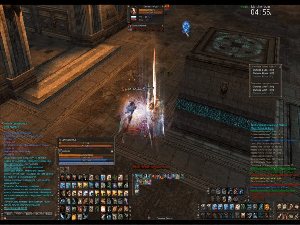

Corte de casteo por destarget
Las habilidades como trick, aura flash, que sacan target, tienen la particularidad de que si logra sacar el target y al mismo tiempo estamos casteando una habilidad, esta habilidad se corta. Una forma de evitar ese corte de casteo, es cerrando la ventana de target cuando estamos casteando. Esto puede ser útil en situaciones donde tenemos que usar el Life Force, talismán de robar buff, deadshot, toda habilidad no instantánea.
Las habilidades que son self (que solo nos lo podemos tirar a nosotros) cuentan, tenemos que tirarlas sin target alguno para evitar ese problema de corte de casteo.

Auto Ataque y Agresión
El aggression solamente saca target por un breve periodo de tiempo, si estamos atacando a un objetivo (Ej. Pet de paladín) y nos tira aggression, basta solamente con no usar ataque repetidamente, tu personaje va a seguir atacando al objetivo por más que cambie de target.
Habilidades Macreadas
(Por más comun que te parezca, no todo el mundo lo sabe)
Las habilidades que tienen poco CD (Aura Flash, Hydro Blast, DeathSpike) cuando se utiliza Buffs de Pony y Song of Renewald, el CD de la habilidad baja a 1 segundo y centésimas (Ej. 1.40), al poner la habilidad en un macro, el juego redondea ese número a 1 y la habilidad, con buen casteo, se vuelve instantánea.
H5 y los summoners
Los summoners transfieren todo buff a su summon,eso incluye buffs comunes y buffs robados con el talismán de robabuff, ejemplo, frenzy, le da frenzy a la pet y al summon, y adicionalmente transfiere el p atak adicional con el Servitor Share.
Los summons no tienen máximo de attack speed (normalmente en cualquier personaje es de 1500) así que es conveniente estaquear todo lo posible, semilla, chance de haste, grether fury, todo beneficia al summon y es la mejor herramienta para hacer instancias en una etapa early del server.
*En este ejemplo es un duelo, el frenzy se iría al terminarlo, pero es para dar un ejemplo.
*El problema del frenzy es que da muy poco p.atk en full vida, además de que el gatero tendría que tener una mejor arma que una espada de mago.
Las habilidades con debuff asociado no missean
Las habilidades que adicionalmente tienen un debuff (stuns, Hamstring Shot, Arrow Rain) son imposibles de esquivar por habilidades como Ultimate evasion o similares.